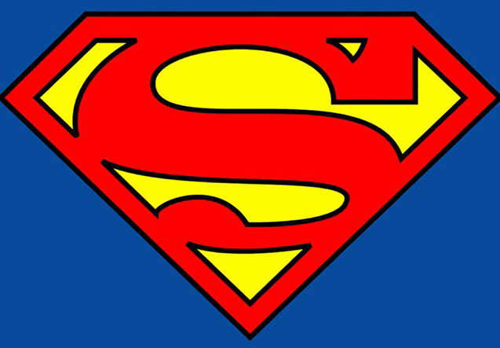

Logo Superman
La ‘S’ de Superman se ha convertido en un icono mundialmente reconocido

Este logo, con forma de diamante y con un borde negro exterior e interior, apareció por primera vez en la esquina inferior derecha de la portada de uno de los cómics en el 1968. Este logo tardaría casi 20 años en aparecer de nuevo en las páginas, pero su éxito se forjó fuera de las viñetas. Desde los años 70 el diseño de Swan se utilizó en todo tipo de merchandising, juguetes, camisetas… Su popularidad hizo que el logo se convirtiera en la seña de identidad de Superman, aunque luego se utilizase con ligeras variaciones en cómics o películas. Había nacido una leyenda.